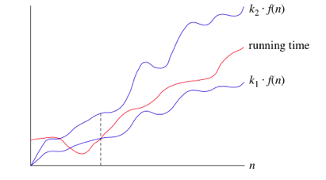

Algorithm Analysis
Logarithmic Review
\({log({a^b})}={b . log(a)}\)
\({log_b ({a}) = {c}} \leftrightarrow {b^c} = {a}\)
\({log_a({n})} = \frac{log_b(n)}{log_b({a})}\)
Big-\(\theta\) (Big-Theta) notation

- When we say that particular running time is \(\theta\)(\({n}\)) it means that when \({n}\) gets big enough, runnig time will be at least k\(_{\text{1}}\) * \({n}\) and at most k\(_{\text{2}}\) * \({n}\) for some constant k\(_{\text{1}}\) \& k\(_{\text{2}}\).
- For small values of n we do not care how running time compares to k\(_{\text{1}}\) * \({n}\) and k\(_{\text{2}}\) * \({n}\).
- We are not stricted to \({n}\) we can use any function as \({n^2}\) or \({n}*{log(n)}\) or any function.
- We are usually using \({log({n}})\) or \(log_2({n})\) in \(\theta\) notation ............... look at equation(2)
1. Order or growth
- constant \(\theta\){n}
- Logarithmic \(\theta(lg({n}))\)
- polynomials \(\theta({n}), (\theta({n^2}), (\theta({n^3}), ...\)
- exponentials \(\theta({2^n})\)
2. Hints
- \({5^{log_2({n})}} = {n^{log_2(5)}} = {n^{2.321}}\) ,
- \(\sqrt(n)= n^\frac{1}{2}\)
- \({2^{2n}}={(2^2)^n}={4^n}\).
Big-O notation
- We use big-O notation for asymptotic upper bounds, since it bounds the growth of the running time from above for large enough input sizes.
- Big O notation is only giving the maximum running time with out caring about the minimum.
- Recall that we write f(n)=O(g(n)) to express the fact that f(n) grows no faster than g(n): there exist constants N and c>0 so that for all n \(\ge\) N, f(n) \(\le\) c * g(n).
Big-\(\Omega\) notation
- We use big-\(\Omega\) notation for asymptotic lower bounds.
- We use it to say that it will take at least this amount of time to run this algorithm.
Examples:
- For the functions, \({n^k}\), \({c^n}\), what is the asymptotic relationship between these functions? Assume that k >= 1 and c > 1 are constants.
- Answer: \({n^k}\) is O(\({c^n}\))
- For the functions, \({8^n}\), \({4^n}\), what is the asymptotic relationship between these functions?
- Answer: \({8^n}\) is \(\Omega({4^n})\)
Build
pandoc --standalone --mathjax --from markdown_github-blank_before_header+tex_math_dollars+tex_math_single_backslash+latex_macros algorithm_analysis.md --output=algorithm_analysis.html